Soru 1Cevap: A
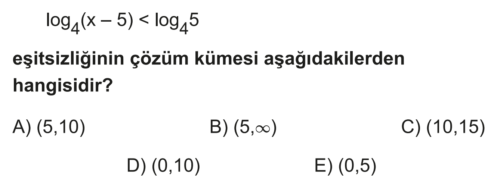
Çözüm
- Taban $4\gt1$: $x-5\lt5$.
- Tanım: $x-5\gt0$.
- $5\lt x\lt10$ (A).
Cevap: A
Soru 2Cevap: B
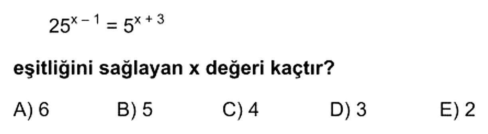
Çözüm
- $25^{x-1}=5^{2x-2}$.
- $2x-2=x+3$.
- $x=5$ (B).
Cevap: B
Soru 3Cevap: E
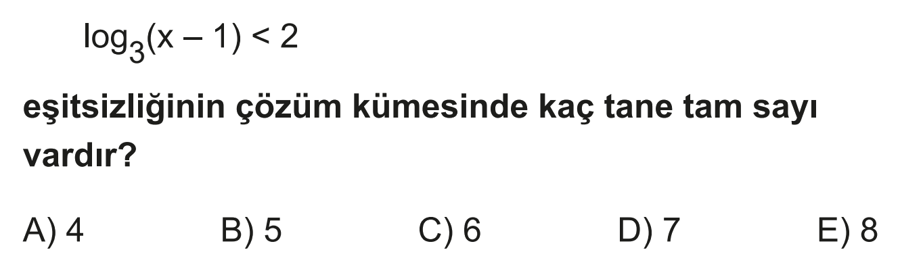
Çözüm
- Tanım: $x\gt1$.
- $x-1\lt9\Rightarrow x\lt10$.
- $2,\dots,9$: $8$ tam sayı (E).
Cevap: E
Soru 4Cevap: B
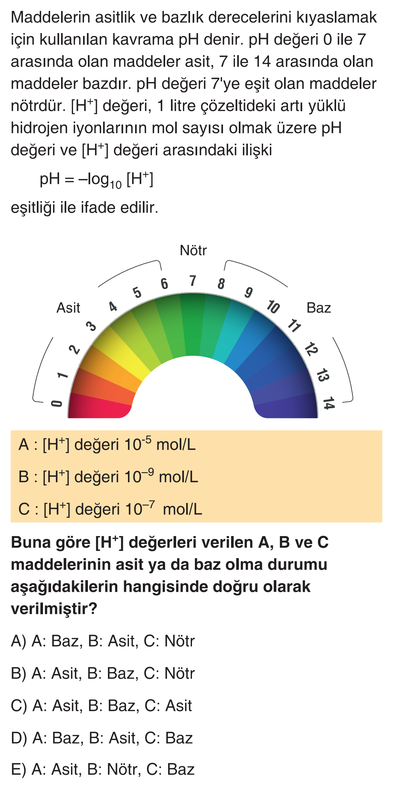
Çözüm
- $\mathrm{pH}=-\log[H^+]$: A için $-\log10^{-5}=5$ (asit).
- B: $-\log10^{-9}=9$ (baz).
- C: $-\log10^{-7}=7$ (nötr). Cevap B.
Cevap: B
Soru 5Cevap: E
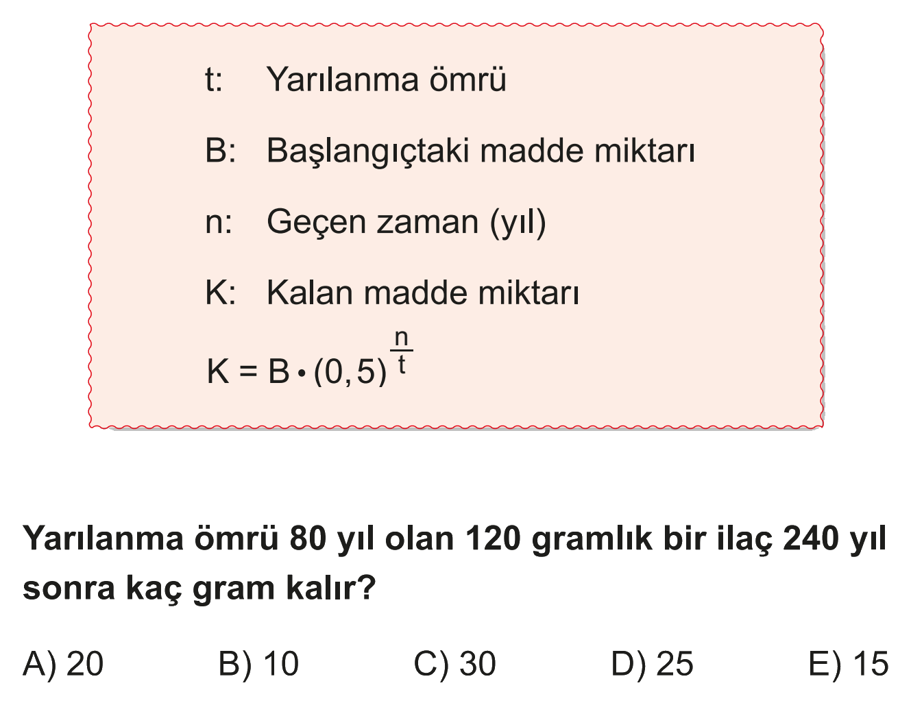
Çözüm
- $K=120\cdot(0{,}5)^{240/80}$.
- $=120\cdot(0{,}5)^3$.
- $=15$ gram (E).
Cevap: E
Soru 6Cevap: C
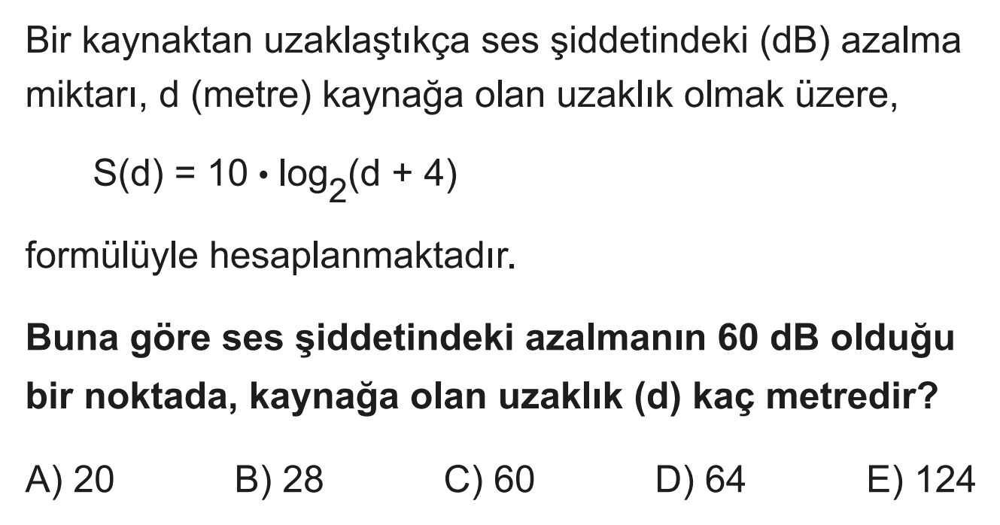
Çözüm
- $10\log_2(d+4)=60\Rightarrow\log_2(d+4)=6$.
- $d+4=64$.
- $d=60$ m (C).
Cevap: C
Soru 7Cevap: A
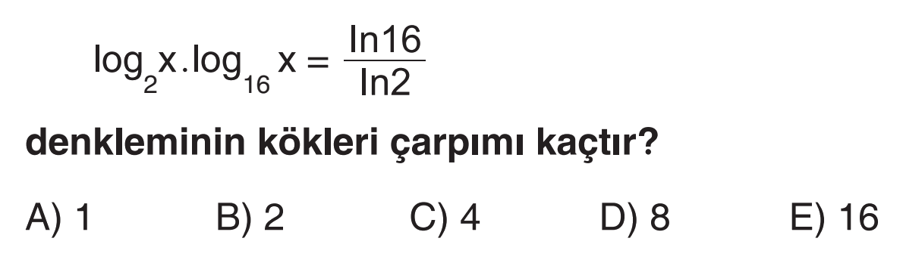
Çözüm
- $\log_{16}x=\tfrac14\log_2x$, $\dfrac{\ln16}{\ln2}=4$.
- $\tfrac14(\log_2x)^2=4\Rightarrow\log_2x=\pm4$.
- $x=16$ veya $\tfrac1{16}$; çarpım $1$ (A).
Cevap: A
Soru 8Cevap: C
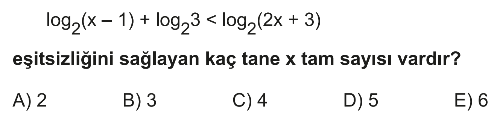
Çözüm
- Tanım: $x\gt1$; $\log_2[3(x-1)]\lt\log_2(2x+3)$.
- $3x-3\lt2x+3\Rightarrow x\lt6$.
- $2,3,4,5$: $4$ tam sayı (C).
Cevap: C
Soru 9Cevap: C
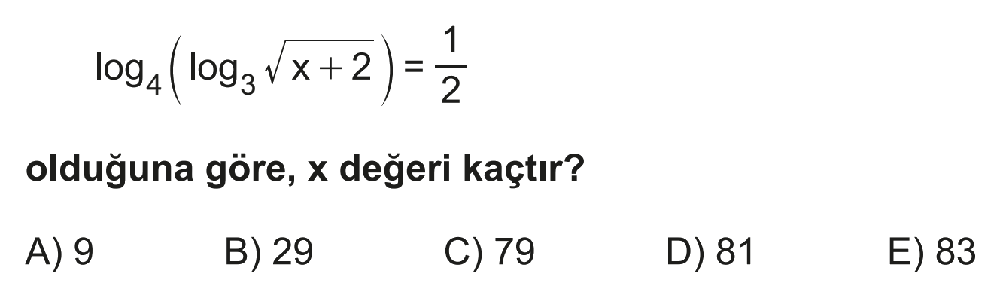
Çözüm
- $\log_4(\cdot)=\tfrac12\Rightarrow\log_3\sqrt{x+2}=2$.
- $\sqrt{x+2}=9\Rightarrow x+2=81$.
- $x=79$ (C).
Cevap: C
Soru 10Cevap: C
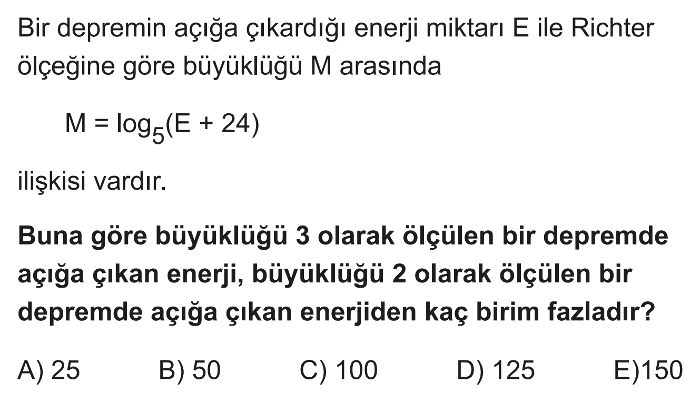
Çözüm
- $M=3$: $E_1+24=125\Rightarrow E_1=101$.
- $M=2$: $E_2+24=25\Rightarrow E_2=1$.
- Fark $100$ birim (C).
Cevap: C
Soru 11Cevap: A
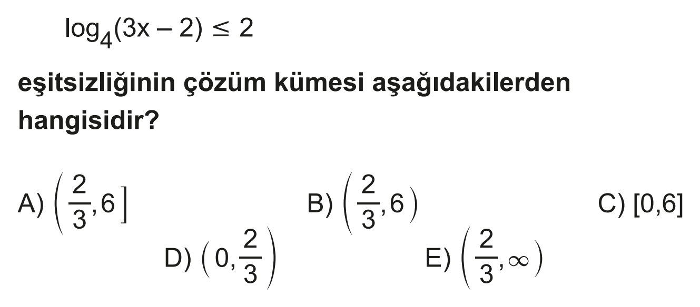
Çözüm
- Taban $4\gt1$: $0\lt3x-2\le16$.
- $\tfrac23\lt x\le6$.
- $\left(\tfrac23,6\right]$ (A).
Cevap: A
Soru 12Cevap: C
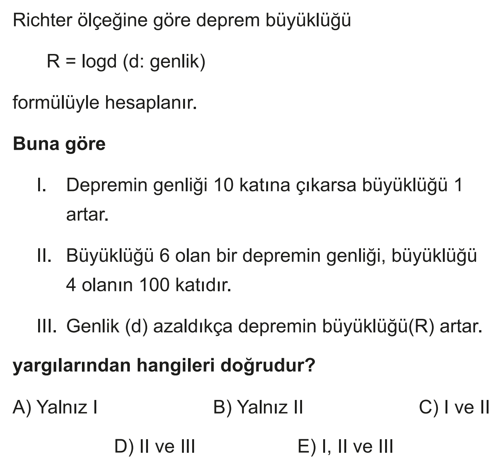
Çözüm
- $R=\log(10d)=1+\log d$: genlik $10$ katı olunca büyüklük $1$ artar (I).
- $6-4=\log\dfrac{d_1}{d_2}=2\Rightarrow\dfrac{d_1}{d_2}=100$ (II).
- $\log$ artan: genlik azalırsa büyüklük azalır (III yanlış). I ve II (C).
Cevap: C
Soru 13Cevap: C
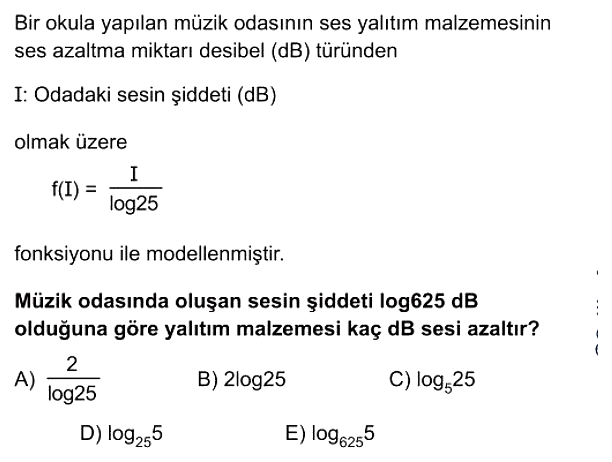
Çözüm
- $f=\dfrac{\log625}{\log25}$.
- $=\log_{25}625=2$.
- Seçeneklerde $\log_525=2$ (C).
Cevap: C
Soru 14Cevap: C
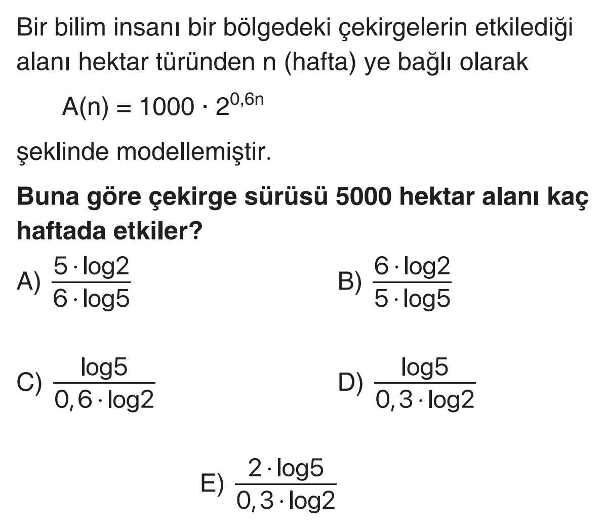
Çözüm
- $1000\cdot2^{0{,}6n}=5000\Rightarrow2^{0{,}6n}=5$.
- İki tarafın onluk logaritması: $0{,}6n\log2=\log5$.
- $n=\dfrac{\log5}{0{,}6\log2}$ (C).
Cevap: C
Soru 15Cevap: B
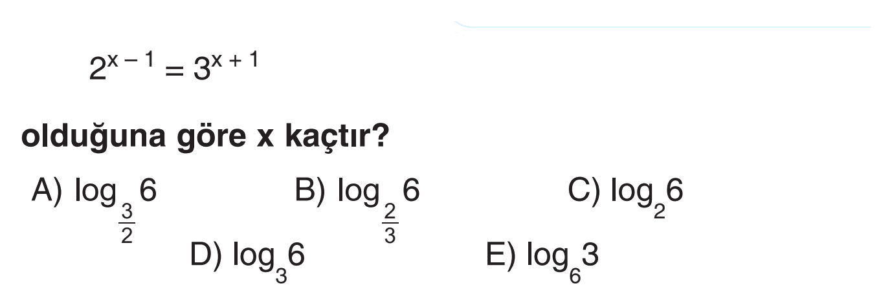
Çözüm
- $\dfrac{2^x}2=3\cdot3^x\Rightarrow\left(\tfrac23\right)^x=6$.
- Logaritma tanımından $x=\log_{2/3}6$.
- Cevap B.
Cevap: B
Soru 16Cevap: C
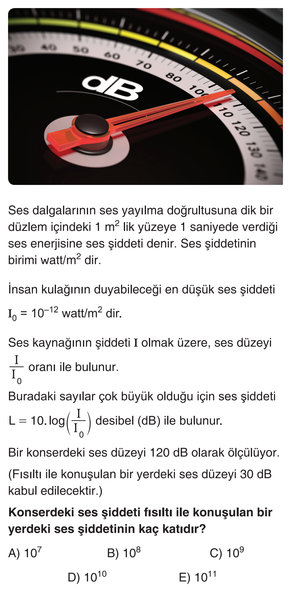
Çözüm
- $120=10\log\dfrac{I_1}{I_0}$, $30=10\log\dfrac{I_2}{I_0}$.
- Fark: $90=10\log\dfrac{I_1}{I_2}\Rightarrow\log\dfrac{I_1}{I_2}=9$.
- $\dfrac{I_1}{I_2}=10^9$ (C).
Cevap: C
Soru 17Cevap: C
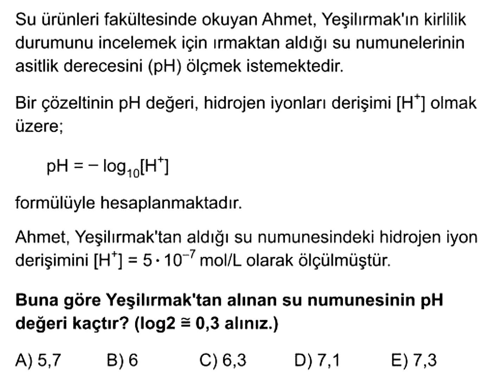
Çözüm
- $\mathrm{pH}=-\log(5\cdot10^{-7})=7-\log5$.
- $\log5=1-\log2\approx0{,}7$.
- $\mathrm{pH}\approx6{,}3$ (C).
Cevap: C
Soru 18Cevap: C
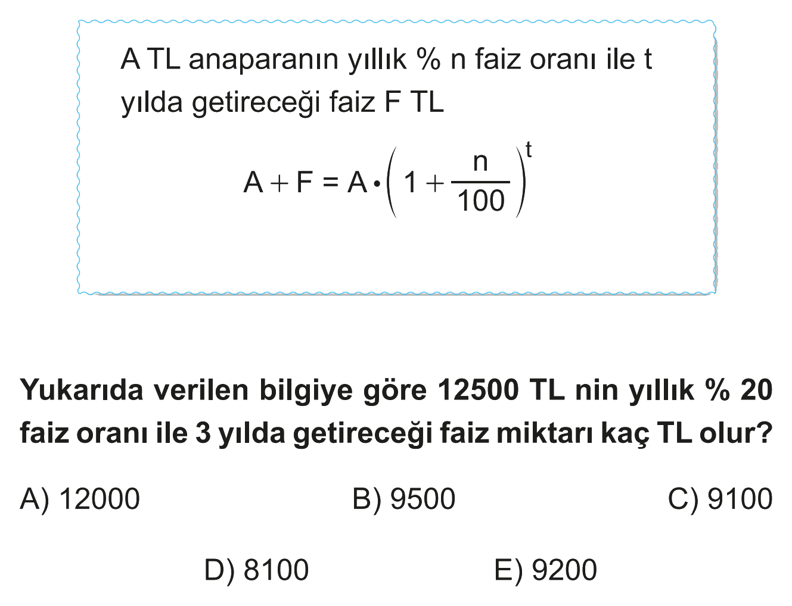
Çözüm
- $A+F=12500\cdot(1{,}2)^3=12500\cdot1{,}728$.
- $=21600$.
- $F=21600-12500=9100$ TL (C).
Cevap: C
Soru 19Cevap: D
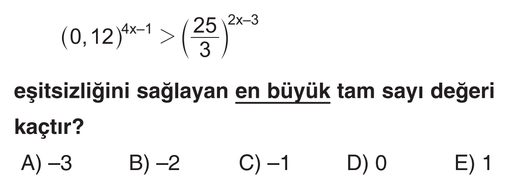
Çözüm
- $0{,}12=\tfrac3{25}$ ve $\tfrac{25}3=\left(\tfrac3{25}\right)^{-1}$: $\left(\tfrac3{25}\right)^{4x-1}\gt\left(\tfrac3{25}\right)^{3-2x}$.
- Taban $1$'den küçük: $4x-1\lt3-2x\Rightarrow x\lt\tfrac23$.
- En büyük tam sayı $0$ (D).
Cevap: D
Soru 20Cevap: C
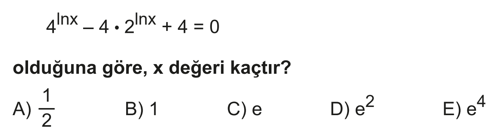
Çözüm
- $4^{\ln x}=(2^{\ln x})^2$; $u=2^{\ln x}$: $u^2-4u+4=0$.
- $u=2\Rightarrow\ln x=1$.
- $x=e$ (C).
Cevap: C